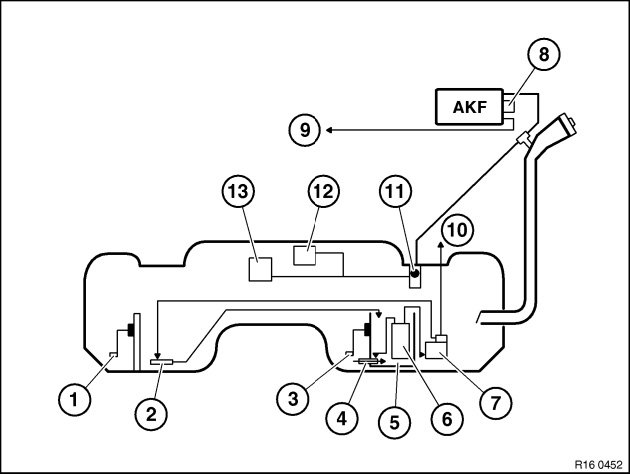
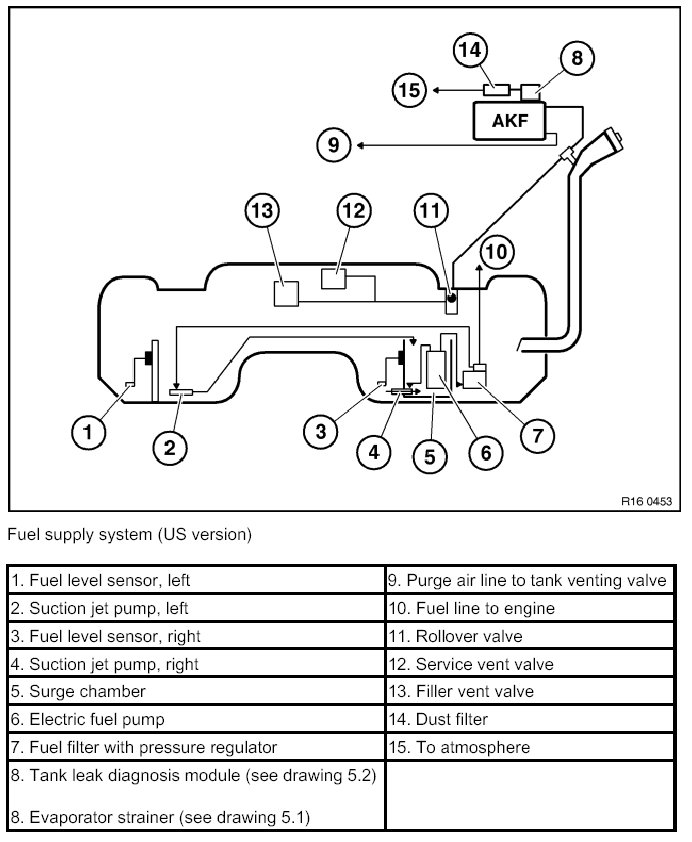

16 00 ... Fuel Supply System (Petrol/Gasoline)
16 00 ... Fuel Supply System (petrol/gasoline)
1. General
General function description of fuel system.
2. Part designation
Schematic drawings of fuel supply systems

Fuel supply system (ECE/Japan)

3. Functional description (see also graphic)
Fuel system
The saddle-shaped fuel tank contains the surge chamber with integrated electric fuel pump on its right side.
The surge chamber ensures that the fuel pump is properly supplied in all vehicle operating states.
The fuel is pumped from the right side of the fuel tank into the surge chamber via the suction jet pump integrated in the surge chamber.
The suction jet pump in the left fuel tank half pumps the fuel through the tank expansion line to the right side of the fuel tank.
The suction jet pump is operated via the fuel feed line.
Return line, pressure regulator and fuel filter are located in the tank.
Fuel supply to engine:
The fuel is routed from the electric fuel pump via the fuel feed line and the fuel filter/pressure regulator unit to the fuel rail.
Pressure regulator and fuel filter are incorporated in a single unit in the tank. There is thus no need for a fuel return line.
The fuel passes through the pressure regulator into the left side of the fuel tank and thereby drives a suction jet pump. This pump repumps the fuel from the left side of the tank to the right side.
The fuel rail is return-free.
Tank safety valve (US version):
The fuel tank is vented during refuelling via the refuelling vent line.
Because of its large cross-section, the refuelling vent line directs the displaced volume (fuel vapours) at high speed through the expansion volume to the carbon canister.
The activated carbon retains the fuel contained in the fuel vapours. The cleaned air is discharged to atmosphere via the evaporation line, the tank leak diagnosis module and the dust filter.
During driving, the system tank is vented in the same way via the vent line.
The condensed constituents of the fuel vapours remain in the tank because the tank has an integrated compensating volume.
The refuelling shutoff valve in the fuel tank is closed by the rising fuel if the fuel tank is overfilled. The ventilation function is maintained by a second float valve.
All three valves are designed as rollover valves. This prevents fuel from escaping from the fuel tank in extreme vehicle positions (overturning, inclined position).
The carbon canister is regenerated by purging with fresh air.
The DME control unit opens the tank vent valve. Thus the vacuum pressure of the engine intake manifold is applied at the purge air line. The carbon canister is purged in this way. The fresh air needed for this purpose is supplied via the tank leak diagnosis module and the dust filter. The fuel constituents bound by the activated carbon are flushed out by the supplied air and directed via the purge line to the engine for combustion.
This operation is only possible while the engine is running.
Tank safety valve (worldwide):
Refer to Tank venting system (US version) with following differences:
1. Carbon canister has a smaller capacity.
2. No tank leak diagnosis module or dust filter.
Leak diagnosis for tank safety valve (US version):
The tank leak diagnosis module (see drawing 5.2) serves to diagnose leakages for the tank venting system within the on-board diagnosis laid down by legislation.
The tank venting system is pressurized and the pressure loss is detected in the event of a leak.
The tank leak diagnosis module is activated by the DME control unit and detects the pressure loss by way of the power consumption of the integrated pump. The air required for this purpose is supplied via the dust filter.
The pressure test line establishes the connection between fuel tank and fuel filler neck. This enables a leak to be detected in the fuel filler pipe - fuel tank cap area.
Determining fill level in fuel tank:
The fuel level is measured by means of lever sensors on both sides of the fuel tank. The combination of the determined ohm values from the right and left lever-type sensors produces the actual level in the fuel tank.
4. Operating data, fuel system
Fuel pump operating pressure.